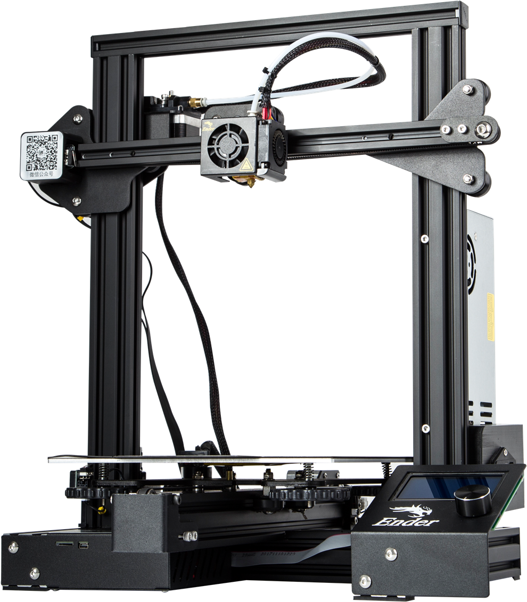
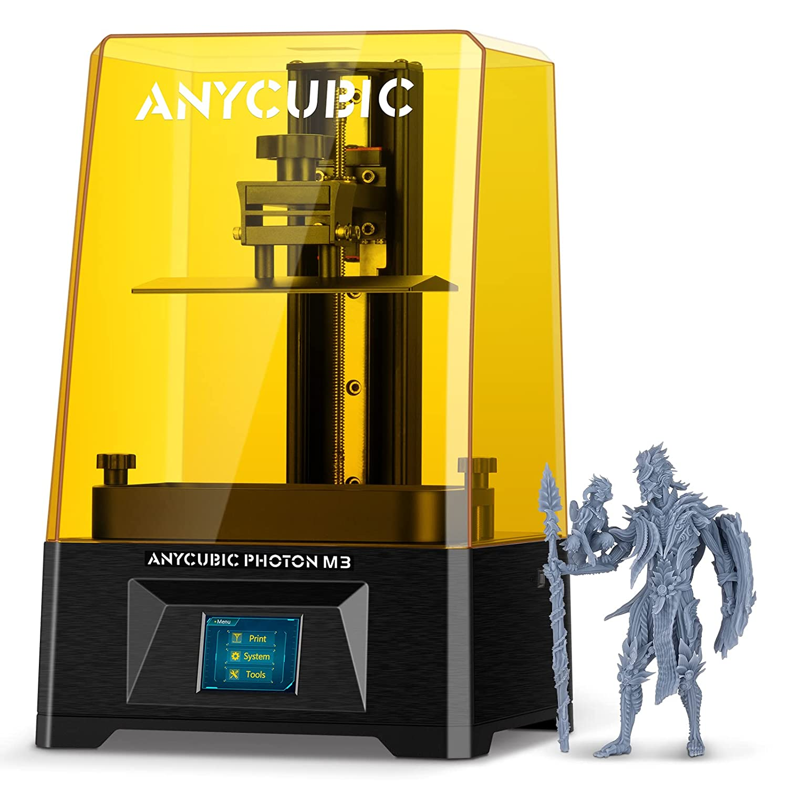

My topic is:
3D Printing
But why?
I first saw a 3D printer during my Erasmus. I loved the idea to print whatever you can think of. One of the things i like is that you can repair stuff that otherwise would be impossible. Or, it can save you some trips to IKEA for small plugs. And of course, you can print all the figures/props you want.
How does it work?
There are 2 main categories of printers:
FDM (Fused Deposit Modeling)
and SLA (StereoLithogrAphy, or more easy: resin printing).
Let's see what they can do:
FDM Printer

+ Budget friendly compared to SLA
+ Not complex (easier supports)
+ Less post porcessing than SLA (also less risky)
- Difficult to print super complex shapes
- Rough surface details (layer height)
- Lots of calibration
SLA Printer
+ Can print complex shapes
+ Prints great details (smooth surface)
+ Easy operation (no excessive dial in)
- Higher cost compared to FDM
- Needs (complexer) supports
- Not environment friendly/safe for health (resin)